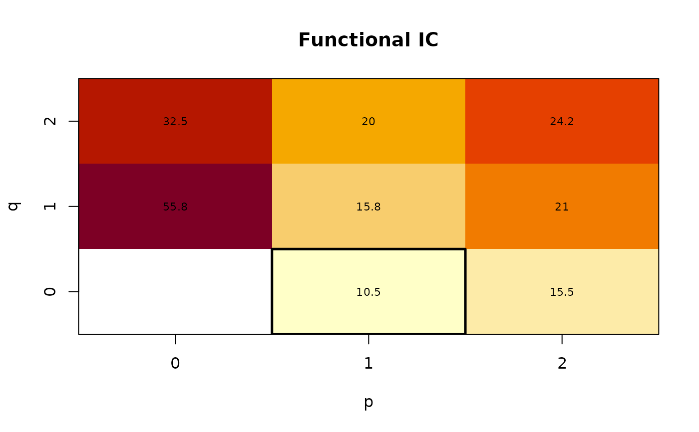

Select the FARMA orders
select_order.RdSelects the FARMA(p, q) orders of short-memory curves. Long-memory curves
need to be fractionally differenced first, for example with frac_diff().
farfima() does this on the centred training curves and drops the first
trim before selecting the orders.
Usage
# S3 method for class 'farfima_order'
plot(x, main = NULL, ...)
select_order(
x,
method = c("ic_full", "ic_auto", "bj", "cv"),
p = 0:5,
q = 0:5,
Npc = 1,
n_lags = NULL,
alpha = 0.05,
iid = FALSE,
starts = NULL,
valid = NULL,
valid_eval = NULL,
h = 10,
window = c("expanding", "fixed"),
cv_score = c("rmse", "mae"),
seed = NULL,
verbose = FALSE
)Arguments
- x
A matrix of short-memory training curves (grid points by time) or an
ftsobject. Forplot(), afarfima_orderobject.- main
Plot title.
- ...
Other arguments passed to
graphics::image(), or tographics::barplot()for"bj".- method
"ic_full","ic_auto","bj"or"cv".- p, q
Candidate AR and MA orders. (0, 0) is excluded.
- Npc
Number of principal components in the operator estimator.
- n_lags
Number of residual autocovariance lags. Defaults to \(\lfloor \log T \rfloor\) for the criteria and 20 for
"bj".- alpha
Significance level of the white-noise test (
"bj").- iid
Whether the white-noise test assumes iid noise rather than weak white noise (
"bj").- starts
Starting models, a data frame with columns
pandq("ic_auto"). Defaults to (2, 2), (1, 0) and (0, 1).- valid
Validation curves following
x, also short-memory ("cv").- valid_eval
Optional curves to check the validation forecasts against, in place of
valid("cv").- h
Maximum forecast horizon (
"cv").- window
"expanding"or"fixed"window ("cv").- cv_score
"rmse"or"mae"("cv").- seed
Optional seed. The white-noise test of
"bj"uses Monte Carlo integration, so its p-values change between runs without one.- verbose
Whether to show progress messages and a progress bar.
Value
An object of class farfima_order with the selected p and q
and a table of the candidates. "ic_auto" also returns its
search_path. plot() shows the criterion or CV score of each candidate
with the selected model boxed, or the p-values for "bj".
Details
"ic_full"(functional IC) minimises the adaptive functional Hannan-Quinn information criterion over all candidates."ic_auto"(auto functional IC) uses the same adaptive functional Hannan-Quinn information criterion with a stepwise search from a few starting models. Its noise level comes from the largest model."bj"(functional Box-Jenkins) tries the candidates by increasingp + qand stops at the first whose residuals pass the functional portmanteau test."cv"(cross-validation) minimises the RMSPE, or MAPE, of the forecasts from the validation origins, averaged over horizons. A candidate whose fit fails at any origin is dropped.
References
Hannan, E. J. and Quinn, B. G. (1979). The determination of the order of an autoregression. Journal of the Royal Statistical Society: Series B.
Kokoszka, P., Rice, G. and Shang, H. L. (2017). Inference for the autocovariance of a functional time series under conditional heteroscedasticity. Journal of Multivariate Analysis.
Kuenzer, T. (2024). Estimation of functional ARMA models. Bernoulli.
See also
estimate_operators() for the operators, and farfima() for the
whole fit.
Examples
x = sim_farfima(n = 300, d = 0, p = 1, q = 0, seed = 1)
o = select_order(x, method = "ic_full", p = 0:2, q = 0:2)
o
#> Selected (p, q) = (1, 0)
#> functional IC (exhaustive search), 8 candidates
plot(o)
